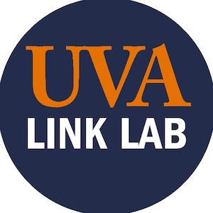
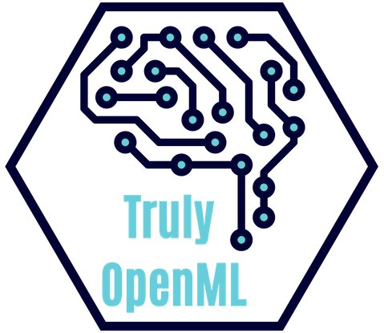
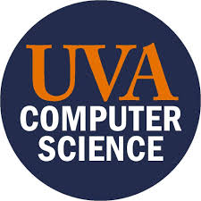

Hi, I'm Jaspreet and I'm pursuing my Masters in Computer Science with a focus on Machine Learning from the University of Virginia as a Rodman Scholar. I have strong background in software development, agile methodologies, Python, Tensorflow, and Pytorch. I'm interested in positions requiring expertise in Computer Vision, Natural Language Processing, or Neural Networks. I'm passionate about doing research in the autonomous vehicle domain specifically regarding safety and autonomous systems.
About Me
Work Experience

Machine Learning Research Assistant - UVA Engineering Link Lab (2019 - Present)
Propose a new innovative certification scheme allowing to demonstrate the level of safety and reliability which allows for safe market introduction of automated/autonomous vehicles.
Applied skills in Python, Tensorflow, Pytorch, Transformer networks (i.e. bert)
Machine Learning Engineer and Software Development Manager - Minimally Invasive Spinal Technology (2019 - 2020)
Developed machine learning algorithms for the analysis and prediction of scoliosis using Unet++ and Centernet architectures. Served as an agile scrum master, organized weekly retrospective sessions, and guided development.
Applied skills in Python, Tensorflow, and Keras, Docker, AWS, Django
Deep Learning (ML) and SWE Intern - Expedition Technology (2019 - 2020)
Performed research to develop a novel semi-supervised framework for training classifiers and simultaneously detecting out-of-distribution inputs Implemented the OpenMax algorithm: a methodology to adapt deep networks for open set recognition, which estimates the probability of an input being from an unknown class. Investigated existing literature in the domain of Open Set Recognition and performed A-B testing that contributed to results published in WiseML 2020.
Applied skills in Python, Tensorflow, Unix, Git, and Agile Software Development
Machine Learning (ML) and SWE Intern - Expedition Technology (2019)
Designed a custom convolutional neural network (CNN) working in the ML pipeline on the basis of existing VoxelNet and CenterNet architectures. Developed and optimized an end to end differentiable CNN by extending an existing codebase to modify preprocessing of data, inner CNN architecture, and post-processing and evaluation. Researched and leveraged anchorless object detection techniques for 3D point cloud object detection.
Applied skills in Python, Tensorflow, Pytorch, Unix, Amazon Web Services, Git, and Agile Software Development

Flight Software Intern - National Aeronautics and Space Administration (Goddard Spaceflight Center) (2018)
Worked as an Embedded Hardware/Software Systems Design and Test intern on Mission CAESAR. Developed applications with an ML510 development board; cross compiled with the Microblaze and PowerPC processors on a Virtex 5 card through a JTAG-USB cable. Design and documentation of embedded systems that target space flight applications: developed and benchmarked core Flight Software apps that directed AI image processing and command/telemetry with ground station.
Applied skills in Python, C, Linux Platform, Xilinx Platform Studio and ISE Design Suite
Additive Manufacturing Intern - National Aeronautics and Space Administration (Langley Research Center) (2016)
Worked with the characterization of 3D printer and acquired mechanical skills in the workings of a 3D printer. Used sensor technology to design to improve the dimensional integrity of a printed component. Analyzed trends in data collected from an IR temperature sensor, laser profilometer, IR camera, and load monitor.
Applied skills in Inventor, AutoCAD, OpenScad, SketchUP, Pronterface
Latest Projects
UVA Engineering Link Lab - Research Assistant
The aim of this research thrust is to propose a new innovative certification scheme allowing to demonstrate the level of safety and reliability which allows for safe market introduction of automated/autonomous vehicles. Analyzing dashcam footage taken of traffic situations and perform natural language processing and vision and language tasks on textual data to extract high-level representations of a traffic scenario using domain knowledge Investigating the ability of the scenario descriptor to perform scenario similarity and scenario retrieval tasks

Truly OpenML: CEO and Co-Founder
Developing a web application that provides a collaborative, intuitive and accessible platform for individuals who are passionate about machine learning (ML). American Evolution Innovator’s Cup: Semifinalist in 2019 in the Commonwealth Challenge
Project Clear Skies: UVA Hoo Hacks Hackathon
Provides developers with a system that can aggregate real time data about a natural disaster from a variety of social media sources giving the developer the ability to perform rapid searches using key words and features. Applied skills in Google Vision API, TensorFlow, Rest API and machine learning for image classification giving first time responders an accurate assessment of the severity of the affected area to reach victims and allocate resources more efficiently
Hacking for Human Rights
Hackathon to Support Save the Children’s Migration and Displacement Initiative. Developing an architecture using natural language processing to aggregate data to aid in the prediction of displacement of children in war zone countries

United Neighbors Mission - Founder and Manager
The United Neighbors Mission is an organization based in the Northern Virginia/DC area. We primarily help individuals experiencing homelessness by providing them with the necessary supplies they may need for living. Recent accomplishments: delivered 970 meals to individuals in Franklin Sq. in DC, raised money for the Black Visions Collective, made 96 care packages for women with hygiene products, and sewed a total of 758 masks for first responders in response to the COVID pandemic

Flight Software Developer
Worked on developing a prototype of a 3D printed UAV that completes a mission autonomously and designing machine learning programs for object recognition and communication for precise missions